Chi Siamo
La festa medievale "LA GIOSTRA" è organizzata dall’Associazione Culturale Cluvia, fondata nel 1995 da un gruppo di amici e giovani appassionati, legati alla cultura e alle tradizioni castellane che decisero di dar vita a questo evento. Il grande successo della manifestazione è dovuto soprattutto alla straordinaria partecipazione della popolazione, senza la quale non sarebbe stato minimamente possibile poter solo pensare di realizzare un evento come quello che è diventato La Giostra, che, negli ultimi anni, rappresenta l’evento più importante per la promozione culturale e turistica di Castello e di tutto il territorio matesino. La festa coinvolge l’intera popolazione in sfilate in costume, mercatini, banchetti, attività concertistiche e mostre d’arte. La gestione di tutta la manifestazione è caratterizzate dalla massima trasparenza e lo spirito che “Cluvia” vuole dare alla manifestazione è quello che caratterizza l’associazionismo: il volontariato, la promozione culturale delle comunità locali, il recupero “ragionato” delle tradizioni.